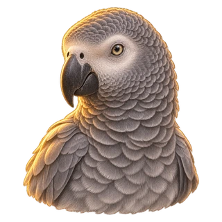

Monitoring Your Bird's Breathing and Heart Health
Cardiology for Animals · David Pelio, DVM, DACVIM (Cardiology)
A rise in your pet's resting breathing rate can be an early sign of heart failure, often before anything else changes. Exotic pets hide illness well, so the breathing count, appetite, droppings and body weight are the best tools you have at home.
How to count breaths
- Wait until your pet is asleep or resting quietly. Do not count right after handling, eating, play or a car ride.
- Watch the chest or body wall. One rise and one fall is one breath.
- Count for 30 seconds and double it, or count for a full minute.
- Write the number down with the date and time.
Learn your pet's normal first
For the first week, count once a day at about the same time and place. That week gives your pet's own baseline. For most exotic species no home breathing-rate cutoff has been published, so we compare your pet with itself. After the first week, count as often as your cardiologist recommends, and any time the breathing looks different.
If the number is high
Recount a few times over the next hour or two while your pet is calm. If it stays above your pet's usual range, or above the number your cardiologist gave you, call your veterinarian the same day. If a high rate comes with any sign in the emergency list below, go to an emergency hospital that sees your species.
Breath counter
Press Start, then tap the big button once for every breath. The timer stops after 30 seconds and shows breaths per minute.
Bird
Birds with heart disease show weakness, tiredness, breathing effort, less activity and a swollen abdomen; African greys can also develop bluish skin around the eyes (Pees et al 2006; Lumeij & Ritchie 1994). Birds usually develop fluid in the body cavity rather than in the lungs. No home breathing-rate cutoff has been published for birds, so watch the effort as well as the count.
Every day
- Breathing while perched and calm: count it, and watch the tail.
- Appetite, droppings and activity.
- Weigh at least once a week on a gram scale, at the same time of day. Weight loss, or a sudden gain from fluid, is often the first sign of change.
Call your avian veterinarian the same day if
- The tail bobs with each breath while your bird is resting.
- Fluffed feathers with a smaller appetite.
- Weight changes by more than 5% in a week.
- Less climbing or foraging, or bluish skin around the eyes.
Go to an emergency hospital that sees birds now if
- Open-mouth breathing at rest.
- A swollen abdomen with breathing effort.
- Weakness, falling from the perch, or sitting on the cage floor.
Recommend the owner monitor [Patient]'s resting breathing while perched and calm, and weigh [Patient] on a gram scale at the same time of day at least weekly. If any signs are appreciated, such as tail bobbing at rest, open-mouth breathing, a swollen abdomen, weakness or falling from the perch, fluffed feathers with reduced appetite, or a weight change of more than 5% in a week, the owner should take [Patient] to be evaluated by [Patient]'s avian veterinarian or the closest emergency facility that sees birds for after-hours care.